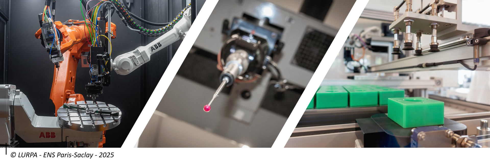

Le master AMSS#
Le master AMSS (Advanced Manufacturing and Smart Systems) aussi nommé Industrie du Futur et Systèmes intelligents en français, vise à former des ingénieurs et chercheurs spécialisés dans les thématiques liées à l’usine du futur. Grâce à de solides bases en mathématiques, vous développerez une capacité d’analyse approfondie, essentielle pour modéliser et simuler des procédés de fabrication ou des systèmes de production avancés. Ces compétences vous permettront d’aborder des concepts innovants comme les jumeaux numériques appliqués à l’industrie.
Programmes#
Semestre 1
Tronc commun obligatoire :
Modules du tronc commun
Exploration de données et optimisation
Techniques et outils pour la preuve de concepts
Méthodologie de la recherche
Anglais scientifique
Modélisation des systèmes multi physique
+ 1 option au choix parmis : IN2P (Ingénérie Numérique Produit Process) et CSC (Commande des Systèmes Critiques)
Modules de l’option IN2P
Modélisation géométrique des assemblages et systèmes
Computer Aided Manufacturing
Acquisition de géométrie par moyens optiques, vision
Modélisation et commande des systèmes robotiques
Advanced Manufacturing
Modules de l’option CSC
Modélisation comportementale des Systèmes à Evénements Discrets
Relability and Risk
Méthodes et outils pour la prévention et la tolérance aux fautes
Méthodes et outils pour l’élimination des fautes
Ingénierie Système basée sur les modèles
Semestre 2
Stage de recherche en laboratoire ou en R&D dans l’industrie
Un semestre 1 structuré en deux parties pour une montée en compétences progressive :
Tronc commun (première moitié) :
Acquisition des fondamentaux nécessaires à la conduite d’un projet de recherche : analyse critique d’articles scientifiques, développement de prototypes informatiques, etc.
Tous les apprentissages sont directement liés aux enjeux de l’industrie du futur.
Spécialisation technique et scientifique (seconde moitié) : Choisissez l’une des deux options pour approfondir vos connaissances :
Ingénierie Numérique Produit Process (IN2P) : Plongez dans les procédés de fabrication métallique, qu’ils soient additifs ou soustractifs, et explorez les systèmes de mesure et de contrôle des pièces produites.
Conception des Systèmes Complexes (CSC) : Approfondissez les systèmes à événements discrets, la sûreté de fonctionnement et l’ingénierie système, pour concevoir et optimiser des solutions complexes.
Le détails des enseignements est donnée dans la page suivante : Les enseignements.
Pourquoi rejoindre ce master ?#
Cette formation vous prépare à répondre aux défis technologiques des industries modernes en combinant innovation, rigueur scientifique et compétences techniques avancées. Elle constitue un tremplin idéal pour les étudiants souhaitant jouer un rôle clé dans l’évolution des systèmes de production et des procédés de fabrication.

Compétences#
Ce master forme des spécialistes en modélisation, simulation et optimisation des procédés et systèmes de production de l’industrie du futur. Il développe des compétences en ingénierie et recherche pour répondre aux défis des technologies avancées.
Prérequis#
Pour intégrer ce M2, les candidats doivent :
Avoir un M1 ou un diplôme équivalent en génie mécanique, génie industriel, ou disciplines connexes.
Maîtriser des bases en mathématiques appliquées, modélisation et programmation informatique.
Posséder des connaissances fondamentales en fabrication ou conception de systèmes.
Montrer un intérêt pour l’industrie du futur et les technologies avancées.
Avoir un bon niveau d’anglais, à l’écrit et à l’oral.
Informations importantes#
Réunion de rentrée : 13/09/2024
Planning 2024-2025 : Cliquer ici
Lieu du master : ENS Paris-Saclay, 91190 Gif-sur-Yvette
Responsable du master : Kevin Godineau : kevin.godineau@ens-paris-saclay.fr
Flyer du master AMSS : Télécharger
Laboratoires et Ecoles partenaires#
Laboratoires de recherche :
LURPA : Laboratoire Universitaire de Recherche en Production Automatisée
LGI : Laboratoire Génie Industriel
L2S : Laboratoire des Signaux et Systèmes
QUARTZ : Laboratoire QUARTZ
{kind=link}
{kind=link}
{kind=link}
Ecoles :
ENS Paris-Saclay
CentraleSupélec
IUT de Cachan
{kind=link}
{kind=link}
{kind=link}